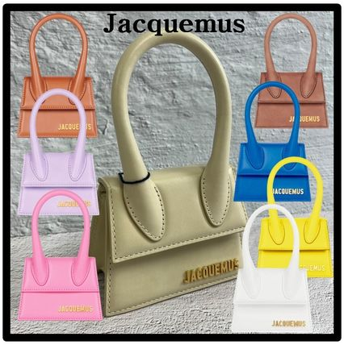
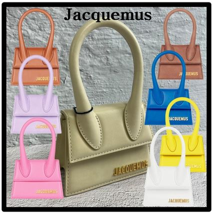

Jacquemus
Jacquemusは、モダンで彫刻的なシルエットと鮮やかな色彩が特徴のブランドです。シンプルながらもどこか違和感のある、アーティスティックな服が好きな方におすすめです。
代表的な一着：Le Chiquito
SNSでも話題となった超ミニサイズのバッグです。実用性を超えた「アクセサリーとしてのバッグ」という新しい価値観を提示しました。
Jacquemusは、モダンで彫刻的なシルエットと鮮やかな色彩が特徴のブランドです。シンプルながらもどこか違和感のある、アーティスティックな服が好きな方におすすめです。
SNSでも話題となった超ミニサイズのバッグです。実用性を超えた「アクセサリーとしてのバッグ」という新しい価値観を提示しました。
